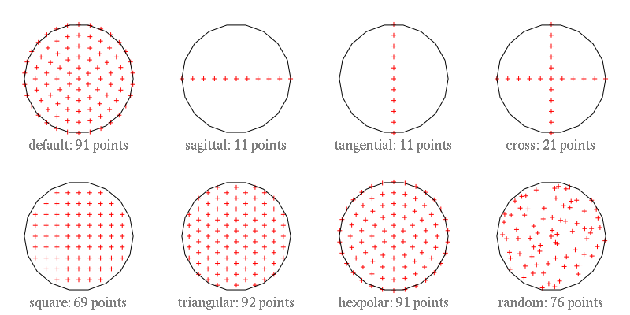

Trace namespace reference
[Core module]
Description
Ray tracer and light propagation
Members
Types
- class Distribution
- class Params
- class Result
- class Sequence
- class Tracer
- enum IntensityMode
- enum Pattern
- class Ray
- typedef [...] rays_queue_t
Function
- std::ostream & operator<<(std::ostream &o, const Sequence &s)
Members detail
Specifies light intensity calculation mode to use by light propagation algorithms.
| Identifier | Description |
|---|---|
| SimpleTrace | No Intensity calculation is performed |
| IntensityTrace | Light intensity computation is performed without taking polarization into account |
| PolarizedTrace | Light intensity with polarization computation is performed (not supported yet) |
Specifies point distribution patterns over a shape delimited surface.

Different patterns rendered on a disk with default density
| Identifier | Description |
|---|---|
| DefaultDist | Preferred distribution pattern for a given shape |
| SagittalDist | Sagittal plane distribution (along the X axis, X/Z plane) |
| MeridionalDist | Meridional plane distribution (along the Y axis, Y/Z plane) |
| TangentialDist | Tangential plane distribution, same as MeridionalDist |
| CrossDist | Sagittal and Meridional distribution combined |
| SquareDist | Square pattern distribution |
| TriangularDist | Triangular pattern distribution |
| HexaPolarDist | Hexapolar pattern, suitable for circular shapes |
| RandomDist | Random distribution |
See also Distribution class.
No documentation available
typedef std::deque<Ray*> rays_queue_t
No documentation available